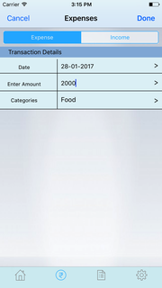
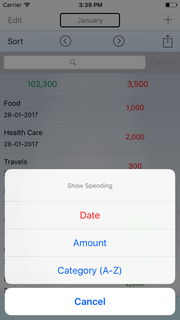
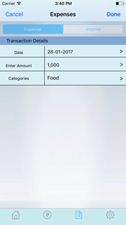

Welcome to "Salary Calculator and Expenditures". Read this document to know how to use Salary Calculator and Expenditures App
When the App Launches you will get the Salary Calculator. You can enter the required fields to calculate the salary. You have to enter the Basic pay in percentage or in Numerics
Tap on Calculate button to calculate the salary.
Salary Details consists of all the components like Basic Pay, HRA, Medical Allowance, Conveyance, PF, PT, Take Home etc.
Tap on ? button to know about respective salary component.
Tap on Share button which is at the right top of the screen to share the screen shot of Salary slip. You can directly share the salary slip screen shot in the WhatsApp by taping on WhatsApp.

Tap on More to share the salary slip through Mail, Message, Fb, etc.
You can see the your expenditures and income according to the week or month or year by selecting respected mode.

Tap on month button which is at the top of the screen. so that you can select week or month or year and you can see respected details.
Tap on left and right buttons to change the month details or week details or year details.
Tap on Expense button and enter the date, amount and category for which you spent the money. Here you can select the Expense or Income to which you are going to enter the details.
Tap on Date field to select the desired date and you can also select the category for which you have spent the amount or by which you got the Income.
Click on Done button which is at the right top of the screen and those entered details will be stored in the Expenses Screen.
Tap on cancel button to dissmiss the screen.
Tap on Chart button which is at the right top of the screen, then you can see the expenditure bar graph. There you can select the month to which you want to see the graph.
By taping on left and right buttons you can change the graph according to the month.
Tap on Close button to dissmiss the screen.
Here you can see all transaction you had performed.
Tap on + button to add expenses or income.
Tap on Edit button or swipe left to delete the respected transaction.
Tap on Sort button to sorting the transactions.
Tap on transaction to edit respected data.
Tap on Search bar to search in the transactions.
Tap on share button to share the screen shot.
It Consisting of detailed information of "Salary Calculator and Expenditures" App.
Tap on Switch to login into the Dropbox account.
Tap on Backup button to backup the data to the Dropbox.
Tap on restore button to restore the data.